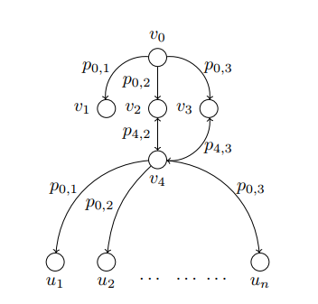
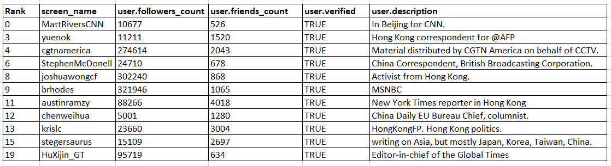
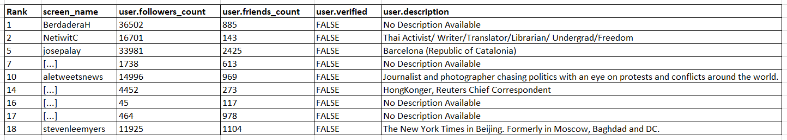

Identifying Critical nodes on Twitter
This is part 2 of a 3-part series on the study of critical nodes in a network.
Links to: part 1 and part 3
Goal
Given a social network graph, like twitter, and an integer k, identify k nodes (user accounts)
that are most critical to the spread of (mis)information in the network when the source of the (mis)information
is known.
Previously
Recall that in part 1 of the series we had looked at how we can identify the nodes critical to the spread of
(mis)information when there was no knowledge of the source of the spread available to us. For those scenarios we
treated every node as a potential source for the (mis)information spread and computed the critical nodes based
on this.
In this part we look at the case when we do have knowledge about the source of the spread of the
(mis)information.
Since the source is given, we know that the (mis)information can reach only those nodes that are connected to
the source through some path. This reduces our search space for critical nodes, allowing us to perform this
computation much faster and with lesser memory requirements.
A valid question arises in this case though - if we already know the source of the (mis)information spread, why
not simply block/ban those accounts? Yes, you could do that. But consider a case where Twitter does not want to
ban the account completely but keep the account active and just limit the exposure from said account.
Our Solution when the source is known
The core idea of the solution remains the same as what was outlined in part 1.

Consider the same example as the one in part 1. Suppose we knew that the node v2 was the
source of the (mis)information. Now if we had a critical node to remove from the network, the choice would be
pretty clear. We would be selecting v4 as the critical node and removing it.
A helpful way to think about the problem is to think of it as a game with 2 players - one player (Twitter in
this case) plays the role of the defender whereas the entity trying to spread (mis)information plays the role of
the attacker (PRC in this case). In part 1, when we had selected critical nodes without knowledge of the source,
it was the defender who was playing the first move by selecting the critical nodes beforehand. Since the
defender had no knowledge of where the attacker might select the source, the defender selected the critical
nodes by looking at the entire graph and selected the nodes which could disconnect the maximum number
of nodes from the network. However, in part 2, the attacker makes the first move and selects the source. Now
it's the turn of the defender. Since the defender already knows the source, it makes the job easier for them
because now the defender can select the critical nodes keeping the nodes selected by the attacker in step1 in
mind. This not only makes the computation easier, but also improves the degree to which we can contain the
spread of misinformation (when compared to part 1).
As you can guess, knowing the source of the (mis)information spread before hand is not at all trivial and
presents a completely different set of challenges.
Advantages of this Solution over the one specified in part 1
1) One clear advantage of this version of the algorithm over the one specified in part 1 is that this version
gives a larger reduction in the spread of (mis)information in the network when compared to the algo of part 1.
This makes it the better choice of algorithm when the source of the (mis)information spread is already known.
2) It also runs in a shorter amount of time and can compute critical nodes for a larger size of the graph when
compared to part 1 algo (given the same amount of memory obviously).
Experimental Setup
The only change in this part is the version of the algorithm used. The
C++
code for the version of the algorithm when the seed set is known is provided here.
(The below text is the same as part 1. Leaving it here for the sake of completion)
For the purpose of this experiment, tweets mentioning Hong Kong were filtered using the
Tweepy library written in Python and the
Twitter API.
The
Python code for the streaming process can be found here.
Tweets were collected from Tue Aug 13 21:30:14 +0000 2019 to Thu Aug 15 13:08:30 +0000 2019. In all, around 1.2
million tweets were collected.
A graph was created from the tweets. Graph was created in the following manner: there are 3 actions that any user
can take from a tweet: retweet, retweet with comment, and reply. All 3 actions are perceived as engaging with the
tweet. An edge was created from a user
v to a user
w if
w took any of the above stated 3
actions on
v's tweet. The graph created in this manner contained a total of 607525 nodes and 994220 edges.
The
JAVA code for the parsing of the Tweet JSON object and the
subsequent creation of the graph can be found here.
Selecting the Source
Since this version assumes that we already know the source of the (mis)information spread, we need to select a
seed that we could use as the source. As stated earlier, this problem is not trivial and is, currently, outside
the scope of the discussion we are having. One of the options towards future work is to incorporate machine
learning into the algorithm to see if it improves the quality of the results.
For now, the selection of seed was done as follows (using a conservative approach): we looked at the user
descriptions of all the 607525 accounts. If description contained the keywords "China" and "News" in it, we made
the assumption that the account belonged to a news organization from China and hence could be a potential
source. Some accounts were added and removed from the list based on some basic background checks done for the
accounts. This finally gave us a list of 169 accounts that served as our source for this experiment.
Results and Observations
We limited our search to identify the top 20 critical nodes present in the network. Note that since the nodes
selected as critical by this version of the algorithm depend heavily on the source selected, which was selected in
this case based on a very broad heuristic, the nodes mentioned below might not be an accurate estimation of the
"real" critical nodes in the network. To get the closest estimate, we should ideally have the entire set of accounts
that are creating original tweets about the described misinformation.
But we can still make some general observations with our selected source. We have divided the critical nodes into
two sections - verified and unverified accounts - to help better analyze the results. Here, unless stated otherwise,
we will be comparing against the results of part 1.


Observation 1) Most of the critical nodes identified are accounts belonging to news stations or journalists
working in HongKong
This makes sense if you think about it. We selected the source as the news stations in China. The general populace
of HongKong will probably not be following news stations in China. But the journalists and news agencies covering
stories related to HK will most probably be following the Chinese stations. So the flow of information can be
pictured as follows - Chinese news stations under state control tweet out information - these are picked up by the
journalists and news stations working in HK who then reply or add their own views on these news stories and then
tweet that out to their followers - the followers of these news accounts then progressively retweet, reply, or
comment on these tweets - and the process cascades to include more people.
The important point to note here is that the first line of people who are being exposed to PRC propoganda are mostly
the HK NewsStations and journalists. So it makes sense when our algorithm chooses them as critical, because if they
did not tweet out information, majority of the general populace in HK would not be exposed to that information.
Observation 2) There is a small, but not a major, overlap between the critical nodes selected in part 1 and part
2
Among the verified nodes, there are 2 accounts that overlap among the two results: @yuenok and @joshuawongcf. The
top 5 nodes selected as critical in part 1 do not appear in part 2. This can be because these 5 nodes are "far away"
from our chosen source of 169 nodes. Since these 5 nodes are at a greater distance, the probability that they were
exposed to the information originating from the Chinese news stations was very low, and hence their low
rankings.
The other observations about the relative importance of the accounts from the point of view of Twitter carry over
from part 1 and can be applied as is to this scenario as well. We will not be repeating that stuff.
This concludes our study of critical nodes on Twitter. Hope this gave some insight into how we could go about
finding the critical nodes in a network. Twitter was only an example. We could apply this to
any kind of
network. For eg. consider the case of a disease outbreak. If we had a graph representing the location of communities
and the people in it, we could, in theory, predict which communities were most susceptible to breakout of an
epidemic using the algo mentioned in part 1. If we knew where an epidemic could begin, that is we knew the source of
the disease spread, we could target the critical communities and ensure that the spread is contained by using the
algo described in part 2. The use of this is manifold.
So now that we have looked at ways to minimize the spread of (mis)information by playing the role of the defender,
what if we were trying to maximize the spread of (mis)information instead? Is there a way to do that?
As it turns out, there is an algorithm for that as well.
We will be covering this in
part 3.
References
[1]
Maximizing the Spread of Influence through a
Social Network
[2]
Influence Maximization: Near-Optimal Time Complexity Meets
Practical Efficiency
[3]
Disrupting diffusion: Critical nodes in network
FootNote 1: One of the details that we glanced over was the probability values that are used. In the example in part
1, we assumed for simplicity purposes that if
v0 sent out a tweet, then every follower of
v0 acted upon that tweet (either through retweeting, replying, or quoting) with probability 1.
Of course, that is not the case in the real world. For this particular study, we assumed the probability of a user
v taking an action on every tweet to be 1/indegree(
v). This means that if a vertex
v has
an indegree of 4, then
v will be influenced by the information shared by each of the 4 vertices with a
probability of 1/4. In the real world, this probability will vary and will not be the same for all of the users.
Computing this probability exactly is way more complicated than the scope of this discussion permits, and we will
hence not be going into that here.